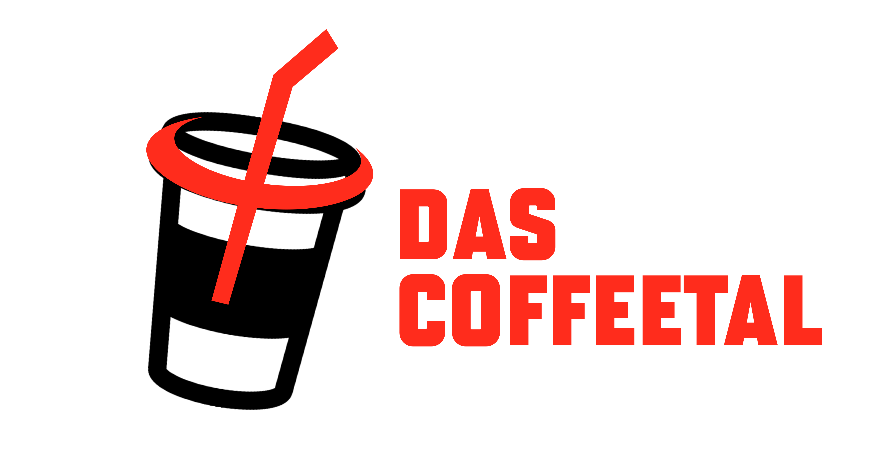

← Back to Portfolio

Final design

First sketch
Das Coffeetal
One day when I was talking to my brother I had an amazing idea. Nowadays, there are so many concept coffee shops and why not open a one with a communism concept, maybe you could open it in METU.
If you haven't figured it out yet, the name is a word play on "Das Kapital". I think it is funny.
In the first sketch I wanted the logo to be a coffee cup. But my brother suggested it to be a coffee pot. I think it's better. You can see the sickle as a part of the handle with the spoon standing for the hammer.
The font is "Bourgeois" the font of METU and it looks similar to Cyrillic alphabet.